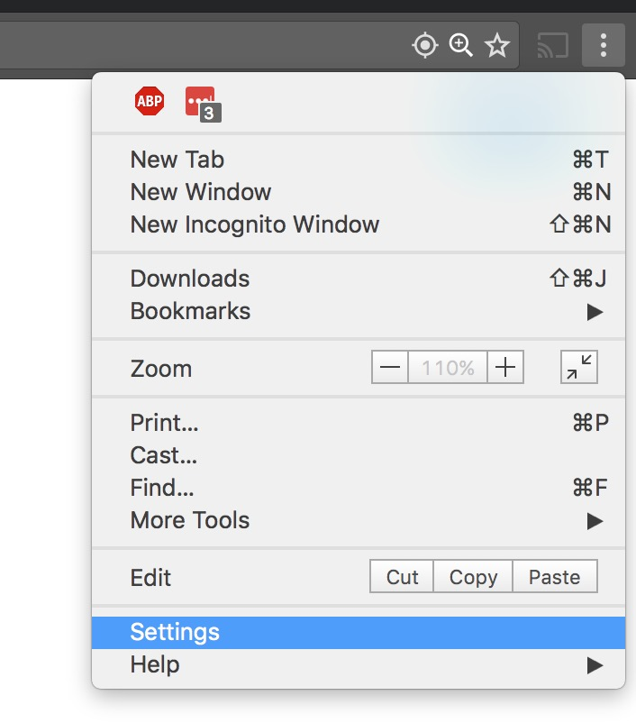
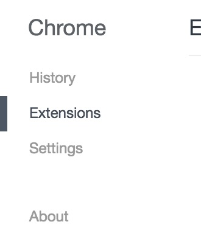
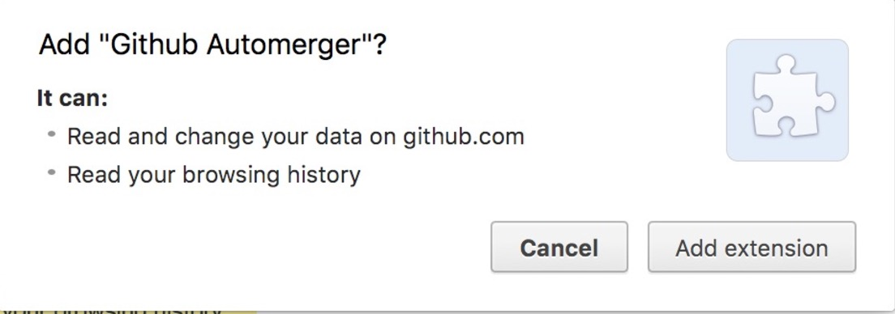
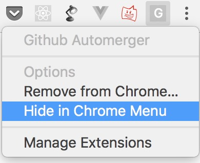
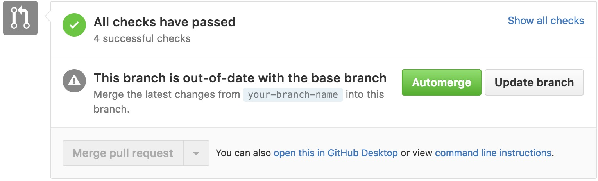

Automerge.js
Lightweight extension/bookmarklet for github that updates branches, waits for tests to pass and merges in the PR.
Bookmarklet
Bookmarklet
Drag and drop this button to your bookmarks and use it whenever you want to merge a branch in.
Chrome Extension
1. Download the Extension
Download extension
2. Open Settings

3. Select Extensions Tab

4. Drag and Drop the Downloaded .crx File

5. Hide from the Extensions Bar

6. Voila
